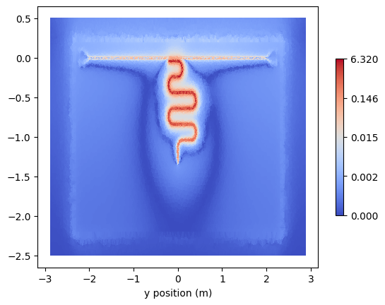

Basic Eigenmode Simulation of Side-coupled Resonator
Qiskit Metal Design
[1]:
%load_ext autoreload
%autoreload 2
import os
os.environ["KMP_DUPLICATE_LIB_OK"]="TRUE"
os.environ["PMIX_MCA_gds"]="hash"
# Import useful packages
import qiskit_metal as metal
from qiskit_metal import designs, draw
from qiskit_metal import MetalGUI, Dict, open_docs
from qiskit_metal.toolbox_metal import math_and_overrides
from qiskit_metal.qlibrary.core import QComponent
from collections import OrderedDict
# To create plots after geting solution data.
import matplotlib.pyplot as plt
import numpy as np
# Packages for the simple design
from qiskit_metal.qlibrary.tlines.meandered import RouteMeander
from qiskit_metal.qlibrary.tlines.straight_path import RouteStraight
from qiskit_metal.qlibrary.tlines.pathfinder import RoutePathfinder
from qiskit_metal.qlibrary.terminations.launchpad_wb import LaunchpadWirebond
from qiskit_metal.qlibrary.terminations.open_to_ground import OpenToGround
from qiskit_metal.qlibrary.terminations.short_to_ground import ShortToGround
from qiskit_metal.qlibrary.couplers.coupled_line_tee import CoupledLineTee
# Set up chip design as planar, multiplanar also available
design = designs.DesignPlanar({}, overwrite_enabled=True)
# Set up chip dimensions
design.chips.main.size.size_x = '4.8mm'
design.chips.main.size.size_y = '2.4mm'
design.chips.main.size.size_z = '500um'
design.chips.main.size.center_x = '0mm'
design.chips.main.size.center_y = '-1mm'
# Resonator and feedline gap width (W) and center conductor width (S) are set to 50 Ohm
design.variables['cpw_width'] = '10 um' #S
design.variables['cpw_gap'] = '6 um' #W
# Create GUI
gui = MetalGUI(design)
# Lauchpad 1
x1 = '-2mm'
y1 = '0mm'
launch_options1 = dict(chip='main', pos_x=x1, pos_y=y1, orientation='360', lead_length='30um', pad_height='103um',
pad_width='103um', pad_gap='60um')
LP1 = LaunchpadWirebond(design, 'LP1', options = launch_options1)
# Launchpad 2
x2 = '2mm'
y1 = '0mm'
launch_options2 = dict(chip='main', pos_x=x2, pos_y=y1, orientation='180', lead_length='30um', pad_height='103um',
pad_width='103um', pad_gap='60um')
LP2 = LaunchpadWirebond(design, 'LP2', options = launch_options2)
# Using path finder to connect the two launchpads
TL = RoutePathfinder(design, 'TL', options = dict(chip='main', trace_width ='10um',
trace_gap ='6um',
fillet='90um',
hfss_wire_bonds = True,
lead=dict(end_straight='0.1mm'),
pin_inputs=Dict(
start_pin=Dict(
component='LP1',
pin='tie'),
end_pin=Dict(
component='LP2',
pin='tie')
)))
######################
# lambda/4 resonator1#
######################
otg1 = OpenToGround(design, 'otg1', options=dict(chip='main', pos_x='-0.2mm', pos_y='-40um', orientation = 180))
stg1 = ShortToGround(design, 'stg1', options=dict(chip='main', pos_x='0mm', pos_y='-1.35mm', orientation = -90))
# Use RouteMeander to fix the total length of the resonator
res1 = RouteMeander(design, 'resonator1', Dict(
trace_width ='10um',
trace_gap ='6um',
total_length='3.7mm',
hfss_wire_bonds = False,
fillet='99.9 um',
lead = dict(start_straight='300um'),
pin_inputs=Dict(
start_pin=Dict(component='otg1', pin='open'),
end_pin=Dict(component='stg1', pin='short')), ))
# rebuild the GUI
gui.rebuild()
Palace Eigenmode Simulation
(make sure to update the path to the Palace binary first)
[ ]:
from SQDMetal.PALACE.Eigenmode_Simulation import PALACE_Eigenmode_Simulation
from SQDMetal.Utilities.Materials import MaterialInterface, MaterialConductor
#Eigenmode Simulation Options
user_defined_options = {
"mesh_refinement": 0, #refines mesh in PALACE - essetially divides every mesh element in half
"dielectric_material": "silicon", #choose dielectric material - 'silicon' or 'sapphire'
"starting_freq": 5e9, #starting frequency in Hz
"number_of_freqs": 1, #number of eigenmodes to find
"solns_to_save": 1, #number of electromagnetic field visualizations to save
"solver_order": 2, #increasing solver order increases accuracy of simulation, but significantly increases sim time
"solver_tol": 1.0e-8, #error residual tolerance foriterative solver
"solver_maxits": 200, #number of solver iterations
"fillet_resolution":12, #number of vertices per quarter turn on a filleted path
"palace_dir":"~/spack/opt/spack/linux-ubuntu24.04-zen2/gcc-13.3.0/palace-develop-36rxmgzatchgymg5tcbfz3qrmkf4jnmj/bin/palace",#"PATH/TO/PALACE/BINARY",
"num_cpus": 16 #number of cpus to use in the simulation
}
#Creat the Palace Eigenmode simulation
eigen_sim = PALACE_Eigenmode_Simulation(name ='res_eigen_test', #name of simulation
metal_design = design, #feed in qiskit metal design
sim_parent_directory = "", #choose directory where mesh file, config file and HPC batch file will be saved
mode = 'simPC', #choose simulation mode 'HPC' or 'simPC'
meshing = 'GMSH', #choose meshing 'GMSH' or 'COMSOL'
user_options = user_defined_options, #provide options chosen above
create_files = True) #create mesh, config and HPC batch files
#Add in metals from layer 1 of the design file
eigen_sim.add_metallic(1)
#Add in ground plane for simulation
eigen_sim.add_ground_plane()
#Add in lumped element ports on launcher pads for 50 Ohm matching
eigen_sim.create_port_CPW_on_Launcher('LP1', 20e-6)
eigen_sim.create_port_CPW_on_Launcher('LP2', 20e-6)
#Fine mesh the resonator, launch apds and transmission line
eigen_sim.fine_mesh_components(['TL', 'resonator1', 'LP1', 'LP2'], min_size=8e-6, max_size=100e-6, taper_dist_min=10e-6, metals_only=False)
#Sets up the lossy interfaces for MA, SA and MS interfaces
eigen_sim.setup_EPR_interfaces(metal_air=MaterialInterface('Aluminium-Vacuum'), substrate_air=MaterialInterface('Silicon-Vacuum'), substrate_metal=MaterialInterface('Silicon-Aluminium'))
#Only works in v0.14
# eigen_sim.set_farfield(ff_type='conductor', ff_material=MaterialConductor("OFHC"), ff_plane='z_neg')
#Prepares the mesh file and config file
eigen_sim.prepare_simulation()
[ ]:
#run the simulation
eigen_sim.run()
The data will be stored in the output directory along with pregenerated plots slicing the device plane. Nonetheless, the slices can be manually retrieved via the PVDVTU_Viewer class. Either initialise the class directly or via the returned object when calling retrieve_field_plots:
[ ]:
%matplotlib inline
pvdtu = eigen_sim.retrieve_field_plots()
leSlice = pvdtu.get_data_slice(0)
leSlice.plot(np.linalg.norm(leSlice.get_data('E_real'), axis=1), 'coolwarm', True);

[ ]: